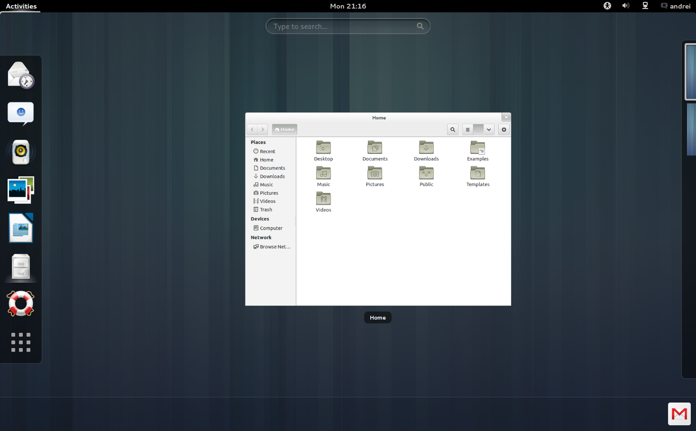
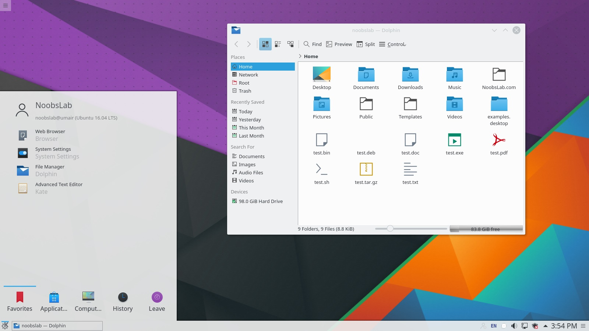
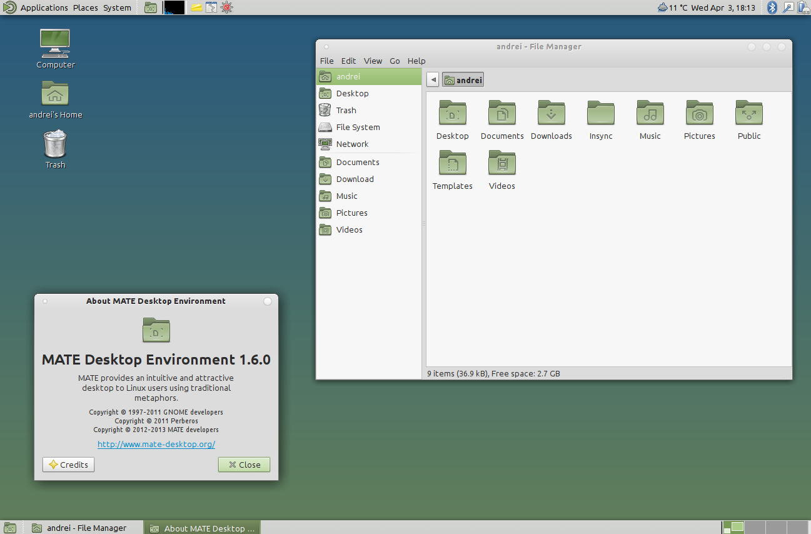
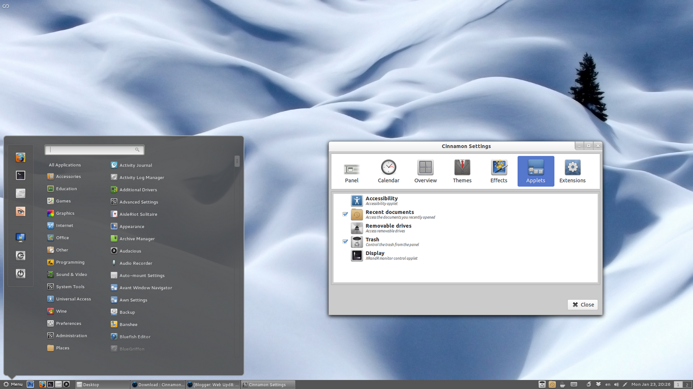
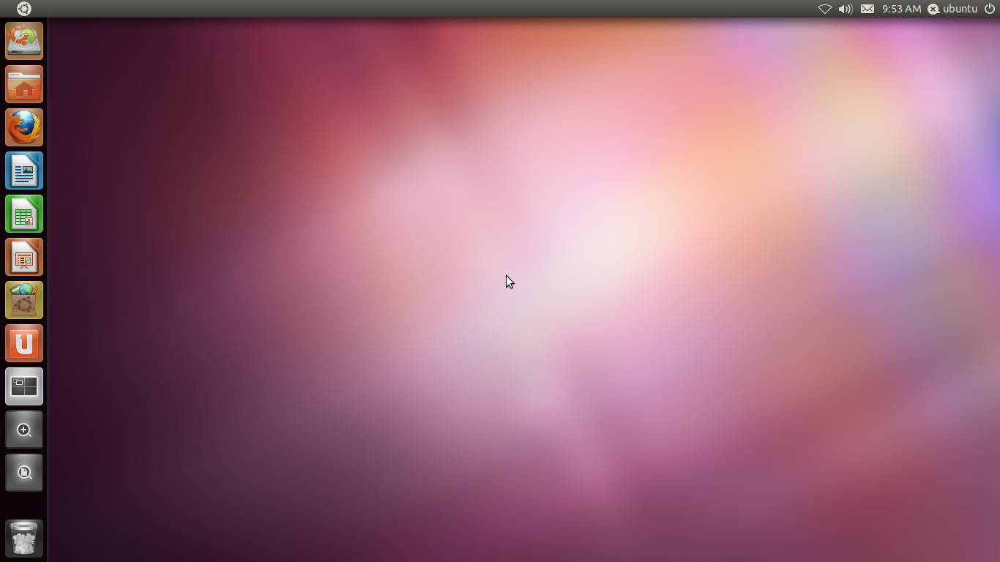
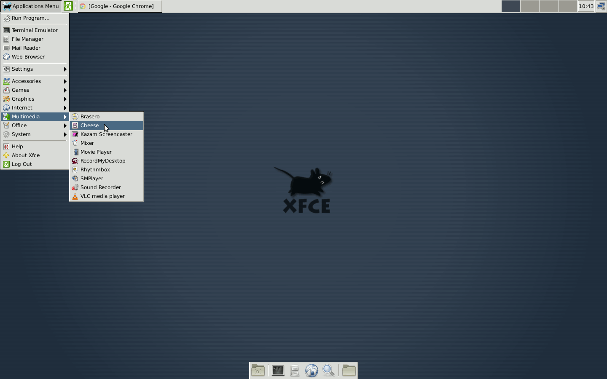

Desktop Environments
So Many Choices!
The significance of Desktop Environments
Whenever you think of a PC or a MAC or almost any computer for that matter, you think of the mouse and keyboard, icons, buttons, pictures, and your pretty background. Well it may suprise you to know that it hasn’t always been that way. Way back when the internet was a barren wasteland and virtually non-existant for the general public, there was no such thing as desktop environments and the only way for users to interact/talk to their computer was to learn a complicated computer language, which they used to type commands into the terminal. There was no mouse, no buttons, no icons, and a usually black screen with a blinking cursor to tell the user that the computer is ready to accept input.
The first Desktop Environments
The first electronic computer came out around 1938 and was developed by the US navy to be used on board a submarine. It wasn’t until the 1970s, that the first desktop environment came out. The very first desktop environment was developed by Xerox for the Xerox Alto computer. However it took another 14 years or so for the desktop environment to really catch on in the comsumer world when Macintosh adopted this style of computer interface; and later Microsoft followed suit. Now, UNIX which is what the Linux kernel is based off of also used a desktop environment. This led to a race for the most user friendly and visually appealing Dektop Environment.
Linux desktops
Once desktop environments hit the mainstream consumer base, the number of people using computers increased dramatically, because the desktops made it easy for anyone to directly interact with their computer. The Linux operating system has many many different desktop environments available for user and distro developers to use with their Linux distro. We will talk about the most user friendly and popular environments, but first we will talk about the history of Desktop Environments in linux.
The start of Desktops on linux
Desktops in Linux run on something called the X-window-system or X. This system runs on top of the Linux shell. On the most user friendly distros the X-server is executed automatically on boot, but on some of the more advanced distros used for servers and hacking systems, the X-server must be started manually by the user. The X-window-system was originally developed in 1984 at MIT and was implemented in the UNIX kernel. Later it was implemented in the Linux kernel and is still in use as the main window manager. However, this could be short lived as the new Wayland) window management system is supposed to be taking over as the dominant window manager, but more about that later.
Most popular Desktop Environments
GNOME:

Probably one of the oldest and most recognized of the Desktop Environments, GNOME was started in 1999 by The GNOME Project, which was mostly made up of volunteer developers
KDE Plasma

KDE is a very appealing desktop complete with nice and fluent animations, a Windows 7-like basic layout, and a full arsenal of built in tools. Due to it’s familiar layout, KDE is a great desktop environment for beginners migrating from Windows. However, due to it’s animations and eyecandy, it requires a good computer (nothing crazy though perhaps an Intel i3 and a good 4Gigs of RAM). KDE’s History
MATE

MATE is actually an offshoot of GNOME. MATE is also a Windows 7 type of desktop. It has a nice menu, its great for beginners, and it is stable. MATE ships with some custom MATE tools and uses a lot of GNOME software. MATE’S History)
Cinnamon (My personal favorite)

Cinnamon is a nice happy medium between eye candy and stability. Cinnamon is a fork of GNOME3 and has the stability of GNOME with the appeal of KDE. Cinnamon was developed by the folks over at Linux Mint an Ubuntu based distribution with its own package manager. Linux Mint is another great distro for beginners from Windows 7.
Unity

Unity is yet another fork of GNOME. Unity was developed by Cononical specifically for their Linux distro Ubuntu, which most Linux beginners start on Ubuntu or a subsidiary of Ubuntu. So naturally this desktop is also very user friendly.
XFCE

And last but not least, we have XFCE. XFCE is one of those oldies but goodies. It is rather minimalistic so perhaps not for the absolute beginner. XFCE is more MAC-like than anything as it features a navigation bar at the bottom like a MAC but it is very basic. This is great for those computers that are older and have out of date hardware. XFCE’s History
Conclusion
Now you should have a good grasp on what a Desktop Environment is and the different kinds that are available to you, the Linux user. Remember that the whole purpose of a Desktop Environment is to make computers more user friendly so most of them are, and most of them can be used by the average Joe. So get out there and experiment with different distros with different Desktops. Or see what different Environments are supported by your distro of choice. GOOD LUCK!!